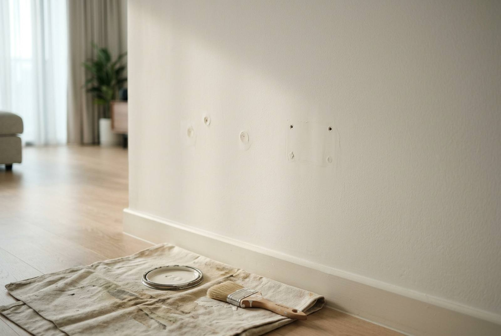

Paint touch-up before handover: when it blends, and when it won't

A good touch-up is invisible; a bad one leaves a wall of shiny squares that looks worse than the marks it covered. The difference is mostly preparation and knowing when to stop patching and repaint the wall corner to corner. On two recent move-outs in two-bedroom condos, touch-up cost $280 for crack filling and marked walls and ceilings, and $400 for a make-good that included repainting the living, dining and bedrooms.
Why touch-ups show
Even with the right colour out of the right tin, new paint on an old wall can stand out. Four reasons:
- Sheen difference ("flashing"). Fresh paint dries with a slightly different sheen from paint that has been on a wall for two years, and a small dab catches the light at an angle. This is the most common reason a touch-up is visible.
- Fading and dirt. The wall has yellowed or dulled from light, cooking and hands. The tin has not.
- Texture. A brushed patch on a rolled wall has a different surface, visible in raking light from a window.
- Unsealed filler. Filler is far more absorbent than the painted wall around it, so paint sinks into it and dries flatter. Every filled hole becomes a dull spot.
Matt finishes hide touch-ups much better than satin or semi-gloss. Most HDB and condo walls are matt or low-sheen, which is why touch-up usually works on walls and rarely on glossy doors or trim.
The rule: touch up spots, repaint walls
Our working rule on site is simple. A few isolated marks on a wall get touched up. More than a handful, or anything bigger than a palm, and the whole wall gets a coat from corner to corner. A wall ends at a corner or a ceiling line, so the eye never sees an edge where old paint meets new.
| Situation | What to do |
|---|---|
| 2 or 3 screw holes, walls in good condition | Fill, sand, spot-prime, touch up |
| TV bracket, shelf rails, many holes on one wall | Fill, then repaint that wall corner to corner |
| Scuff lines behind a sofa or bed | Clean first; if it doesn't lift, repaint the wall |
| Hairline cracks | Rake out, fill with flexible filler, seal, touch up or repaint the wall |
| Marks on the ceiling | Usually the whole ceiling of that room. Ceilings show patches badly. |
| Walls faded and marked all over after a long tenancy | A full repaint is often cheaper than 40 patches |
Filling holes so they disappear
Screw and nail holes are where most deposit deductions start, and they are easy to do badly. The sequence that makes them vanish:
- Remove the plug. Pull out any wall plug or cut it back below the surface. Filling over a plug leaves a bump.
- Fill slightly proud. Press filler in so it sits a little above the wall; filler shrinks as it dries. Deep holes need two fills.
- Sand flush once fully dry, so no edge can be felt with a fingertip.
- Spot-prime the filler. This is the step people skip, and it is why filled holes show up as dull dots.
- Paint with a roller rather than a brush where possible, feathering out beyond the patch.
Blu Tack and sticky hooks leave grease stains that paint alone will not cover: they need cleaning and sealing first. Wall anchors from a TV bracket leave bigger holes that need two fills and sometimes a small skim.
Getting the colour right
- Ask the landlord for the paint code. Many units were painted with a named brand colour, often a Nippon Paint off-white, and the agent or previous invoice will have it.
- Leftover tins in the storeroom are gold, but check the lid: paint thickens with age and needs stirring well.
- No code? A paint shop can scan a chip, but a scanned match on an aged wall is only close. That is another reason to repaint whole walls rather than patch.
- Ceilings are almost always a standard ceiling white, which makes a full ceiling recoat simple.
What touch-up costs: two real move-outs
| Job | Scope | Price |
|---|---|---|
| The Pier at Robertson, 2-bedroom condo, Sept 2026 | Touch-up of wall cracks, and paint touch-up to all walls and ceilings at dirty areas | $280 |
| One-North Eden, 2-bedroom condo, 689 sq ft | Make-good: patch holes and scuffs, fill and prime, repaint living, dining and bedrooms, make good ceilings and corners | $400 |
Both were done as part of a move-out, in the same visit as the deep clean, which is what kept them at these numbers: no separate call-out, and the painting was done before the cleaning so sanding dust did not land on a clean floor. As a standalone job, a few holes on one wall are a small handyman visit, while a whole-unit repaint is priced by flat size (see HDB painting cost).
What counts as fair wear and tear
Most Singapore tenancy agreements ask for the unit back in its original condition, fair wear and tear excepted. The wording varies, so read your own reinstatement clause, but in practice:
- Usually wear and tear: slight fading, light marks at switch height, faint scuffs on skirting.
- Usually the tenant's to fix: screw and nail holes, Blu Tack stains, crayon, grease marks, damage from moving furniture, and any wall you painted a different colour.
- Disputed most often: hairline cracks, which are usually the building rather than the tenant, and mould, which depends on whether the room was ventilated.
Photos at move-in are your best defence. If the landlord has asked for a full repaint in the agreement, touch-up will not satisfy it: see our guide to end-of-tenancy reinstatement.
Doing it yourself
A handful of holes on a matt wall is a reasonable DIY job if you have the original paint: fill, sand, prime and roll. Where DIY touch-up tends to go wrong is on satin finishes, ceilings, and walls with many marks, where the result is a visible patchwork that the landlord then asks to be repainted anyway. At that point you pay twice.
Frequently asked questions
Why can I see where I touched up the paint?
Usually because of a sheen difference between fresh and aged paint, fading of the wall around it, a brushed patch on a rolled wall, or filler that was not primed and absorbed the paint. Matt walls hide touch-ups best. If a wall has more than a few marks, repaint it from corner to corner so there is no visible edge.
How much does paint touch-up cost in Singapore?
On a recent two-bedroom condo move-out, crack filling and touch-up to marked walls and ceilings cost $280. A fuller make-good that repainted the living, dining and bedrooms cost $400 on another two-bedroom condo. Both were done alongside the move-out deep clean in one visit.
Do I have to fill screw holes before moving out?
Usually yes. Most tenancy agreements treat screw and nail holes as the tenant's responsibility, not fair wear and tear. Remove the plug, fill slightly proud, sand flush, prime the filler and paint, or the landlord may deduct for it.
How do I find the right paint colour for a touch-up?
Ask the landlord or agent for the brand and colour code, look for leftover tins in the storeroom, or have a paint shop scan a chip. A scanned match on an aged wall is only close, which is why repainting a whole wall usually looks better than a patch.
Should I touch up or repaint the whole unit?
Touch up if there are a few isolated marks on otherwise good walls. Repaint whole walls where marks are clustered, and consider a full repaint after a long tenancy where walls have faded and marked all over; it often costs less than dozens of patches and looks far better at inspection.
Getting it done by RK E&C
RK E&C is a Singapore-registered renovation and handyman company (UEN 202442767D) that paints, patches and cleans in the same visit. For a move-out that means the holes are filled and painted first, the aircon is serviced, and the deep clean happens last, so the unit is at its best on inspection day. See our move-out packages, or our painting services if the walls need more than a touch-up.
Send photos of each wall that is marked, with your handover date, through our contact form or WhatsApp, and we will tell you honestly whether touch-up will pass or whether a wall needs repainting.
Walls marked before handover?
Send photos of the marked walls and your handover date. We fill, touch up and repaint where needed, and can do the deep clean in the same visit.
The $280 and $400 figures are from actual RK E&C jobs in two-bedroom condos (The Pier at Robertson, invoice dated 26 September 2026; One-North Eden). Other prices are indicative of the Singapore market in 2026 and are not a quotation. What your tenancy agreement requires, and what counts as fair wear and tear, depends on its wording.